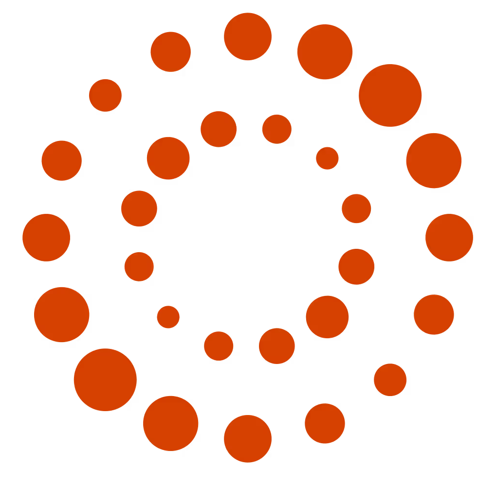

arXiv2026

Academic website
Jonathan
Richard Schwarz
ICL
Visiting Professor · Imperial College London

TR Head of AI Research · Thomson Reuters
OII
Research Associate · Oxford Internet Institute
Research focus
My research targets efficient, general, and robust machine learning — particularly algorithms that transfer knowledge across tasks, letting agents build skill repertoires that accelerate future learning. A central goal is designing systems that abstract knowledge from related problems and reuse it effectively, enabling faster and more flexible learning on new tasks. Beyond foundational machine learning, I have a keen interest in the societal impacts of AI, including AI Safety, Economics, and Political Science. A particular focus is effective pluralism in the values and governance of Foundation Models, and ensuring shared stake in their societal consequences.
Previously, I was a Research Fellow at Harvard University and Co-Founder and Chief Scientific Officer at Safe Sign Technologies, a start-up focused on developing Foundation Models for professional work (acquired by Thomson Reuters in 2024). Before Entrepreneurship, I spent seven years at Google DeepMind as a Senior Research Scientist. During my time at DeepMind, I completed my PhD through the DeepMind–UCL programme, advised by Yee Whye Teh and Peter Latham. My PhD focused on sparse parameterisations and knowledge transfer for efficient ML, researching many ideas (Continual & Meta-Learning, Sparsity, Compression) that became pivotal in the development of large-scale Foundation Models. Before post-graduate work, I graduated top of class from the University of Edinburgh with a specialism in Machine Learning.
Research Interests
Large Language Models
Societal Impacts
AI Safety
Data-centric Machine Learning
Reasoning & Agents
Sparsity
Continual Learning
Neural Data Compression
Meta-Learning
News
- June 2026 Excited to join the Oxford Internet Institute as a Research Associate.
- May 2026 Pleased to join an inspiration exchange on Causal Reasoning & LLMs at The University of Cambridge.
- May 2026 Very proud to officially launch Imperial's new Frontier AI Research Lab.
- May 2026 Serving as Area Chair for the NeurIPS 2026 Evaluations and Datasets Track.
- April 2026 New paper on measuring principal hierarchies under high-stakes competing demands.
- February 2026 New paper on measuring Forgetting in LLM Post-Training.
- February 2026 New paper on Aligning Language Model benchmarks with pairwise preferences.
- January 2026 Serving as Area Chair for ICLR 2026.
- January 2026 New paper on using Knowledge Graphs to construct LLM training data.
- Nov 2025 Invited talks at Allen Institute for AI and University of Oxford.
- Nov 2025 ADMIRE-BayesOpt accepted to TMLR.
Selected Publications
arXiv2025
EMNLP2025
TMLR2025
ACL2025 oral
Cell2024
PhD Thesis2023
ICML2023
NeurIPS2021 oral
ICLR2020
NeurIPS2019
ICML2018 oral
ICML WS2018
Students & Collaborators
Current Students & Researchers
Van Hoan Trinh Incoming
PhD Student · Imperial Frontier AI Lab
Navlika Singh Incoming
PhD Student · Imperial Frontier AI Lab
Lead Researcher · TR Foundational Research
Senior Researcher · TR Foundational Research
Yejin Bang
Senior Researcher · TR Foundational Research
Former Students
Senior Researcher · Microsoft Research
Collaborators
Professor · Gatsby Unit, UCL
Research Scientist · Google DeepMind
Associate Professor · Harvard University
Distinguished Research Scientist · Google DeepMind
Professor · Imperial College London
Professor · University of Cambridge
Principal Legal AI Advisor · TR Foundational Research